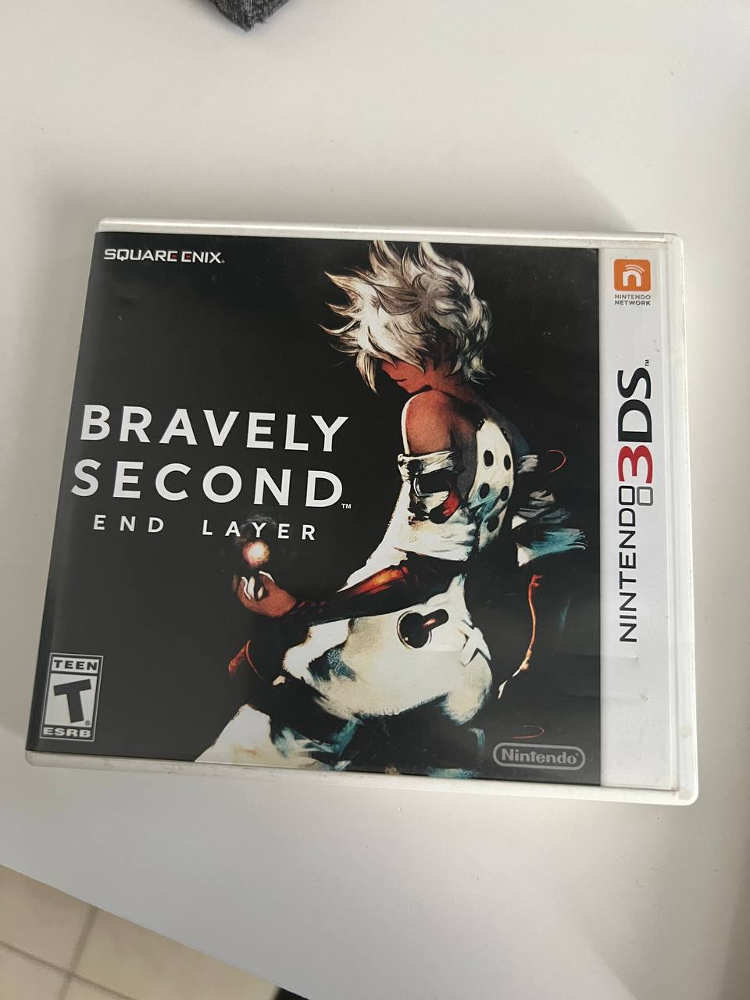

videojuegos
me gustan los videojuegos de fantasia y de terror mson mis favoritos pero tambien me gusta juegos competitivos ya sea de peleas entre otros.
libros
me gustan los libros de fantasia, como de mitos y leyendas , aparte de historia o libros relacionados a mi carrera, ya sea de fotografia o de diseño grafico en general.
fotografia
me gusta la fotografia de paisaje ya sea una foto de naturaleza o fotografia callejera, me gusta retratar la cotidianidad de los dias y tambien la fotografia de retrato